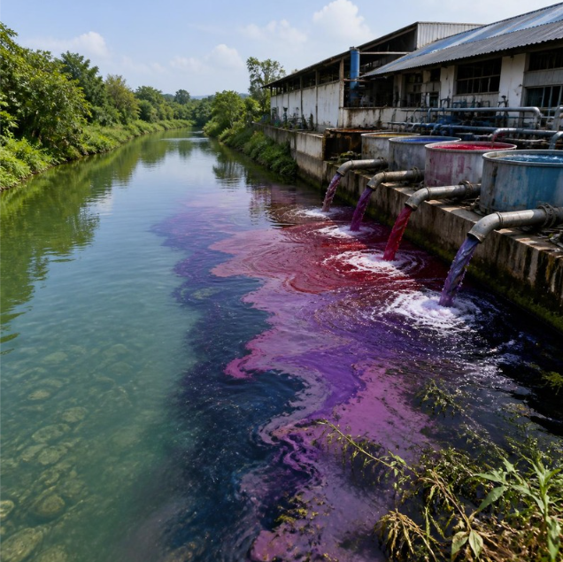

SOCIAL SCIENCE IDP
Re-engineering the
Textile Industry
What happens when progress comes at the cost of the planet?
Our Mission
To explore how the textile industry can become more sustainable while continuing to support economic growth, communities and the development of our cities.
Our Challenge
How can we help the textile industry continue to grow without compromising environmental responsibility and the well-being of communities?
Our Role — Urban Innovators
As Urban Innovators, my role is to investigate the textile industry's sustainability challenges, understand their causes and impacts, and re-engineer its practices through practical, science-based and sustainable solutions.
